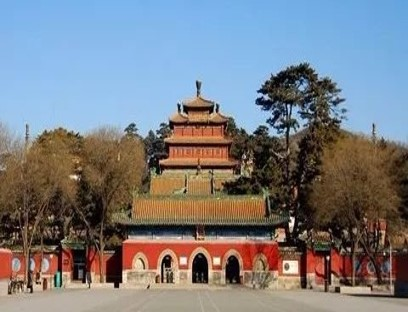
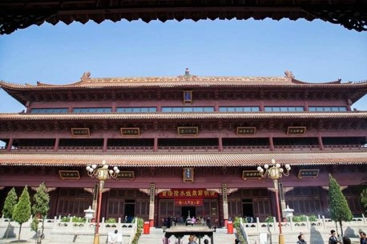
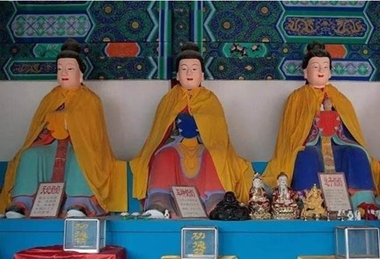
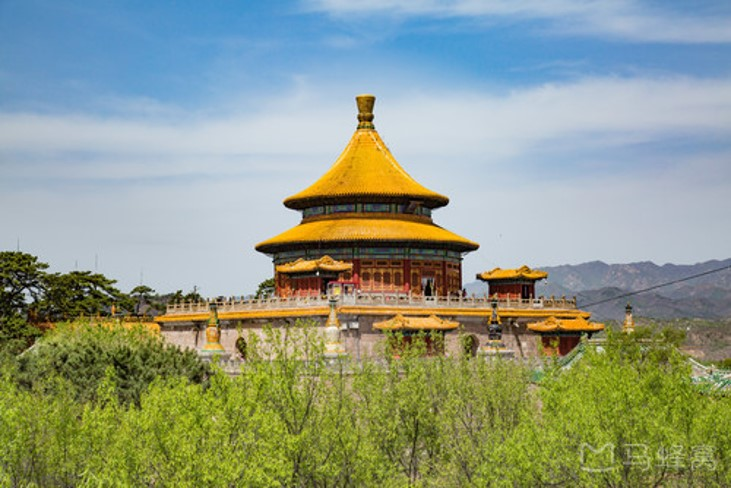
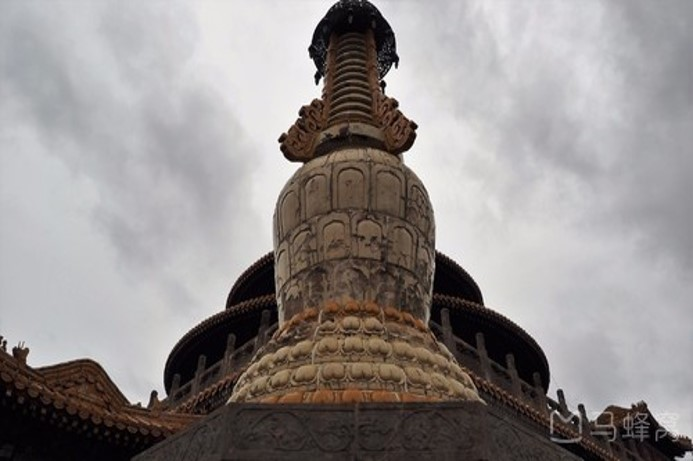
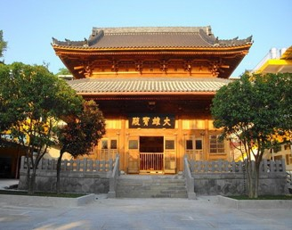
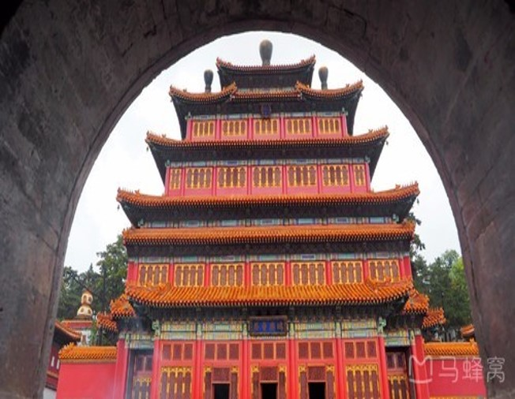

一排排的柱子与正梁及楣梁连结起来，支撑着遮蔽的屋顶，木架之上排铺瓦片，而后砌砖隔墙填在柱间，构建中国建筑的理念。寺庙文化它完整地保存了我国各个朝代的历史文物，在国家公布的全国文物保护单位中，寺庙及相关设施约占一半，谓之"历史文物的保险库"， 乃当之不愧。寺庙建筑与传统宫殿建筑形式相结合，具有鲜明民族风格和民俗特色。
庙宇通常是指供神佛或历史上名人的处所。庙宇结构有三个主要部分:即台基、主体与屋顶。中国庙堂木料结构之因素:木柱、楣梁、正梁、横梁和支柱均披露可见。一排排的柱子与正梁及楣梁连结起来，支撑着遮蔽的屋顶，木架之上排铺瓦片，而后砌砖隔墙填在柱间，构建中国建筑的理念。
庙宇结构有三个主要部分:即台基、主体与屋顶。台基在中国建筑上，非常重要 。所谓台基，包括整个的空间:自平地至台地以及栏杆和台阶。有时台地有两层或三层，以使建筑在台地上的主要建筑物，其形其式昭昭在目。北平的天坛，是一个显明的例子，台地和栏杆三分环绕向上展开。台基的另一个重要作用是强化建筑主体独特的品性，通常借以台基和平台的高度表现建筑物的高贵和地位。中国庙堂木料结构之因素:木柱、楣梁、正梁、横梁和支柱均披露可见。一排排的柱子与正梁及楣梁连结起来，支撑着遮蔽的屋顶，木架之上排铺瓦片，而后砌砖隔墙填在柱间，构建中国建筑的理念。
寺庙分类
佛教:寺、院、庵、堂，寺和院是和尚道场，庵和堂是尼姑道场。
道教:宫、观、庙、祠
佛教寺院是皇宫式建筑，道教庙宇是府衙式建筑，道教庙宇分:大庙、庙亭、小庙。
但福建闽南和台湾，佛教和道教已经融为一体。从广义上来说,庙宇不仅仅与佛教一家有关。但在佛教中，庙宇就有许多种称谓:如"寺"，最初并不是指佛教寺。
庙，从秦代以来通常将官舍称为寺。在汉代把接待从西方来的高僧居住的地方也称为寺，从此之后，"寺"便逐渐成为中国佛教建筑的专称。"寺"是佛教传到中国后，中国人为尊重佛教，对佛教建筑的新称呼。如白马寺、大召寺等。除此之外，如庵，那是尼姑居住的寺庙。还有石窟，那是开凿在山崖上的石洞，是早期佛教建筑的一种形式。印度早期佛寺多用这种形式。印度佛教石窟的形式有两种，一种为精舍式僧房，方形小洞，正面开门，三面开凿小龛，供僧人在龛内坐地修行;一种为支提窟，山洞面积较大，洞中靠后中央立一佛塔，塔前供信徒集会拜佛。在蒙古语中称"寺"为"召"。如大召、五当召等。另外，有称之为布达拉宫、普陀宗乘之庙等。
在道教中，寺庙的称谓也很多:道教创立之初，其宗教组织和活动场所皆以"治"称之。又称为"庐"、"靖"、也称为静宝。在南北朝时，道教的活动场所称呼为仙馆。北周武帝时，道教活动场所的称呼叫"观"，取观星望气之意。到了唐朝，因皇帝认老子为祖宗，而皇帝的居所称为"宫"，所以道教建筑也称为"宫"了。其它还有叫"院"、"祠"的，如文殊院、碧霞祠等。也有直接以建造者的园林地命名的，如明代睢州(今河南睢县)兵部尚书袁可立所建之袁家山，其实是其在自己别业中所建供奉吕祖和八仙众神的道场。
儒家则称之为"庙"、"宫"、"坛"，如孔庙、文庙，雍和宫，天坛等。
伊斯兰教称之为"寺"，如清真寺等。天主教称之为"教堂"。
在原始或民间中，称之为"庙"、"祠"，如旧时奉祀祖宗、神佛或前代贤哲的地方。叫太庙、中岳庙、西岳庙、南岳庙、北岳庙、岱庙等。如祖庙、祠堂(祭祀祖宗或先贤的庙堂)，有武侯祠、韩文公祠等。
寺庙文化它完整地保存了我国各个朝代的历史文物，在国家公布的全国文物保护单位中，寺庙及相关设施约占一半，谓之"历史文物的保险库"， 乃当之不愧。寺庙建筑与传统宫殿建筑形式相结合，具有鲜明民族风格和民俗特色。
同时，寺庙文化已渗透到我们生活的各个方面:如天文、地理、建筑、绘画、书法、雕刻、音乐、舞蹈、文物、庙会、民俗等等。各地一年一度的庙会如火如荼，不仅丰富了各地的文化氛围，同时促进了地方旅游业的发展。
一、隆兴寺
1. 文物价值
正定隆兴寺被中国古建专家梁思成誉为世界古建筑孤例的宋代建筑摩尼殿、被鲁迅誉为"东方美神"的"倒座观音"、中国最高的铜铸大佛"千手观音"。隆兴寺作为河朔名寺，历经千年，见证了唐宋至民国时期中国北方佛教文化的发展变化。隆兴寺是中国国内现存宋代建筑、塑像及石刻最多的寺院建筑之一。

2. 文化活动
(1) 隆兴寺帝王礼佛表演
隆兴寺是座皇家寺院，历代皇帝多次驾临并拨款修缮。据《隆兴寺志》记载：康熙四十九年(公元1710年)，皇帝下令拨国库银两重修隆兴寺后，康熙皇帝亲临瞻礼，赐亲笔手书的"敕建隆兴寺"等19块匾额。
2011年底文保所根据史料记载，重新编排了大型"帝王礼佛盛典"，再现了康熙皇帝驾兴隆兴寺，地方官员迎接圣驾，皇帝御赐匾额、上香礼佛的历史场景。所有参加演出的人员，全部是文保所职工，经过半年多的演出磨合，"帝王礼佛"盛典已经成为游客最喜爱的演出节目之一。
(2) 千手观音表演
隆兴寺大悲阁内供奉的铜铸千手千眼观音，通高21.3米，铸造于北宋开宝四年(公元971年)，铜像身躯高大，比例适度，其形体之巨、雕工之细实为罕见，是世界古代铜铸佛像中最高大、最古老的，她不仅是隆兴寺的象征，更是古城正定的象征。千手千眼观音表演是由导游科十位年轻的姑娘表演的，演绎了千手千眼观音的神韵。
{千手观音}
(3) 春节庙会
庙会时，隆兴寺内帝王礼佛盛典将再现了康熙皇帝敕建隆兴寺、亲赐匾额、礼拜大佛的盛大场景。另外，隆兴寺大悲阁前的佛乐吹奏表演；大悲阁东侧撞响吉祥钟，万民祈福祉活动。
二、柏林禅寺
1. 历史文化

在漫长的历史长河中，这座古刹虽几经兴衰，却仍然香火绵延，高僧辈出。据僧传记载，著名的译经大师玄奘法师在西行印度取经之前，曾来此从道深法师研习《成实论》。
晚唐时，禅宗巨匠从谂禅师在此驻锡四十年，大行法化，形成影响深远的“赵州门风”，柏林禅寺因此成为中国禅宗史上的一座重要祖庭。
金代，这里一度改为律宗道场，曾有五代律宗大德在此弘扬戒律达五十年。最有名的是诠宗律师。金朝末年，法传临济正宗的归云志宣禅师主持法席，柏林禅寺由此革律为禅，宗风大振。
元代，这里先后有圆明月溪禅师 、 鲁云行兴禅师行化，柏林禅寺由兹气象恢宏，成为燕赵一带的佛教中心。
明清两朝，中央朝廷管理赵州地区佛教事务的机构——僧正司设在柏林禅寺。当时柏林禅寺的住持往往同时兼任僧正司僧正。
近百年来，柏林禅寺却屡遭劫难，到 1988年这里重新进驻僧人时，殿堂 、金像已经荡然无存，只有赵州禅师舍利塔及二十余株唐朝古柏，依稀屹立，昭示世人这里曾是一处佛教古刹。
1988 年，柏林禅寺开放为佛教活动场所，河北省佛教协会会长净慧大和尚亲自主持柏林禅寺修复工作，在各界人士大力护持下，1992 年，普光明殿落成；随后，钟鼓楼 、观音殿、藏经楼、禅堂、怀云楼、开山楼、会贤楼、指月楼、云水楼、香积楼、古佛庵、关房、佛学院、茶香楼 、 文殊阁、普贤阁、万佛楼相继建成。
2003 年9 月 6 日 ，巍峨雄伟的万佛楼举行落成暨佛像开光大典，标志着赵州祖庭的中兴大业取得重大成果。一处占地 90 余亩，殿堂楼阁鳞次栉比、庄严整肃的千年古刹重焕生机。
柏林禅寺现任方丈为明海禅人，常住僧众 160 余人，内设河北省佛学院、河北禅学研究所。每年举办上元节吉祥法会、中元节报恩法会、清明节水陆法会、生活禅夏令营、念佛七、禅七等大型弘法活动。僧众坚持每天早晚课诵、过堂、坐禅，每半月诵戒布萨，如法如律结夏安居。冬参夏讲。赵州祖庭已经成为北方佛教的一座重镇。
2. 净慧老和尚
柏林禅寺前任住持上净下慧老和尚。出生于1933年，他是中兴柏林寺的组织者和推动者。他现任中国佛教协会副会长、河北省佛教协会会长和河北《禅》杂志主编。法师髫龄出家，早年曾亲近近代禅宗大德虚云老和尚并从其承法成为临济宗、曹洞宗传人。法师日常法务繁忙，但精力过人，虽日理万机，但常安详自在。1993年，法师根据自己几十年修学佛法的体会，结合时代潮流，正式提出“生活禅”，作为柏林寺修行弘法的指导思想和实践方针。“所谓生活禅，即将禅的精神、禅的智能普遍地融入生活，在生活中实现禅的超越，体现禅的意境，禅的风采。提倡生活禅的目的在于将佛教文化与中国文化互相熔铸，产生出具中国文化特色的禅宗精神，还其灵动活泼的天机。在人间的现实生活中运用禅的方法，解除现代人生活中存在的各种困惑、烦恼和心理障碍……使我们趋向智能的人生、圆满的人生。”（《生活禅开题》）围绕这一思想，净慧法师提出了一系列修行的方法、原则。他把佛法的思想凝炼为“觉悟人生，奉献人生”作为生活禅的宗旨。几年来，生活禅受到教内外人士的关注和好评。
2013年4月20日清晨六时二十六分，净慧长老在四祖寺安详示寂，享年81岁。
三、易县后山奶奶庙

曾是传说中黄帝祭祖地的河北易县后山越来越受到专家学者的注意，目前已被列为河北省十大重点抢救项目之一，该地发掘和抢救工程正在有序开展。
据专家学者考证，易县后山是5000年前黄帝部族由西北高原东迁后聚居、生活、发展、祭祀的根据地。史书记载的黄帝大战于涿鹿之野，就是以这里为中心。其地域北到涿鹿、西到太行，传说中炎黄大战、黄帝战蚩尤、釜山会盟诸侯、黄帝造车、嫘祖养蚕染五色衣、仓颉造字、伶伦制乐器作五律制十二钟等历史上许多重大事件都发生在这一带，至今这里尚存嫘祖洞、黄帝洞、蚕姑坨、釜山、钟模坑等传说遗址。
黄帝统一各部落后，虽建都于今涿鹿县矾山黄帝城，但后山仍是其近畿和家庙祖祠所在地，并派大臣伶伦护守祭祀。此后夏、商、周三代3000多年，易县后山一带一直是炎黄后裔生存发迹之地。由此留下许多传说，不少村名、地名都与此有关。
据专家介绍，目前在易县后山留下的70多处古迹庙宇中，最主要的有3处:黄帝庙和黄帝洞、侯王殿、太阳殿。据考证，黄帝庙和黄帝洞是历代帝王诸侯祭祖的地方，侯王殿是历代帝王诸侯封禅的地方，太阳庙是历代帝王诸侯祭天的地方。
专家考证表明，秦汉以前，历代帝王诸侯都在易县后山举行祭天、封禅、祭祖等活动。将祭天、封禅、祭祖活动改在今天的泰山，是从秦始皇登泰山封禅开始的。因此，专家学者认为，易县后山为"中华第一祖山"，是中华第一座祖庙--黄帝庙所在地，是中华民族融合统一最重要的发祥地之一。
专家认为，在中国长达5000年的历史沿革中，易县后山文化虽然受到儒、道、佛3种思想的影响，但其主旨仍然是祭祖活动，是追寻史前文明极其珍贵和丰富的文化遗产宝库，具有重要的保护、开发价值。
易县后山老奶奶庙真是说什么的都有啊。据说不到十八岁就不能去，后山老奶奶庙必须连着去三年则灵。
每年的农历三月初一到三月十五都会人山人海，全国各地的善男信女以及企业老板、高管都到此地来求老奶奶保佑。
四、龙泉寺
泉寺始建于辽朝应历初年，当时释继升因对佛法感悟超群而被师兄嫉妒，被排挤出白马寺，以手上唯一的财产《金刚经》为指引，向北行进，来到凤凰岭创建了龙泉寺。
元大都妙善寺的比丘尼舍蓝蓝八哈石("八哈石"意思是师尊)退居宫外妙善寺，该寺是舍蓝蓝以历年宫中御赐财物建成。舍蓝蓝退居妙善寺后，又于西山重修龙泉寺，建层阁于莲池。"
1332年(元朝至顺三年)，元大都妙善寺的比丘尼舍蓝蓝八哈石("八哈石"意思是师尊)圆寂。
龙泉寺1564年(明朝嘉靖四十三年)，昌平州人崔学履为凤凰岭龙泉寺写下一首诗《龙泉喷玉》："龙泉喷寒玉，汩汩无停时。道人对澄澈，游子杨清冷。"
1659年(清朝顺治十六年)，顾亭林由山东入京师，在《昌平山水记》中记录了"昌平州西南五十里龙泉寺"。
1884年(清朝光绪十年)，直隶总督李鸿章聘莲池书院主讲黄彭年主纂《畿辅通志》，其中以《昌平山水记》为基础，描绘了龙泉寺的地理位置及水流情况。
1895年(光绪二十一年)，麻兆庆修《昌平外志》记载了龙泉寺。
1889年(清朝光绪十六年)，释印光来到龙泉寺担任行堂(寺院净碗扫地、铺筷添饭的杂役)。日后留书黄底黑字"南无阿弥陀佛"影壁于龙泉寺东院。
中华民国时期，庙会兴盛。1938年(民国二十七年)，广东的香客募捐在金龙桥南的东院建万缘茶棚，施茶施粥。1939年(民国二十八年)立《万缘茶棚碑》，该碑现已无存。抗日战争时期渐趋沉寂。
到中华人民共和国初期，龙泉寺仅有房屋几十间。至文革时期龙泉寺改为民居或他用。
1995年，随着凤凰岭自然风景区开放，当地政府及以蔡群居士为首的诸善信开始逐渐恢复寺院原貌。
2004年，释学诚率众弟子一行8人入住龙泉寺。
2005年4月11日，经北京市宗教事务局批准，龙泉寺正式对外开放成为佛教活动场所，并迎请中国佛教协会副会长兼秘书长学诚大和尚住持寺院。
五、普乐寺

普乐寺建于乾隆三十一年公元1766年 。普乐寺 当时，清朝政府彻底平定了准噶尔部贵族的叛乱，使生活在巴尔喀什湖一带的左、右哈萨克族和生活在葱岭以北的东西布鲁特(柯尔克族)，从此摆脱了准噶尔叛乱势力的压榨和欺凌。不久清军又粉碎了"回部"霍集占兄弟的暴乱，使西北疆更趋隐定。至此，西北各民族与清朝政府的关系日益密切，他们不断派代表到山庄朝觐，奉表贡物，接受封赏，并经常伴随乾隆围场行猎。为了表示对西北各民族宗教信印的尊重，进一步加强中央政权的统治，乾隆遂决定修建这座庙宇，敕赐"普乐寺"，即天下统一，普天同乐的意思。普乐寺的修建，是各民族团结的象徵。1949年后，经过维修，被列为全国重点文物保护单位，备受各族人民的爱护和崇仰。

六、 临济寺

临济宗从宋以后基本上成为禅宗主流，许多著名的士大夫，如黄庭坚、苏轼、苏辙等都与临济宗渊源极深，并被列为门人。北宋大改革家王安石在推行新政遇到阻力时，亦从临济宗肯定自我，威猛精进的禅理中吸取了力量。他曾作《诉衷情》:"莫言普化只颠狂，真解作津梁。蓦然打个筋斗，直跳过义皇。临济处，德山行，果承当。将他建立，认作心诚，也是寻香。"
南宋时期(1127-1279)，日本僧人荣西两次前来宋朝学习佛法，回国后首创日本佛教临济宗，临济宗在日本"学徒云集，朝野尊尚"，成为日本佛教主要宗派之一。此宗认定临济寺为其祖庭，视澄灵塔为其重要的祖塔之一。
临济寺在宋金战争中毁于战火，仅存残塔。金大定二十三年(1183年)，金世宗下旨修复澄灵塔及临济寺各建筑。今之澄灵塔即为辽金典型样式。临济寺元朝时，住持海云法师主持了重修和扩建。元葛罗禄乃贤所著《河朔访古记》载:"临济寺在真定府城中， 定远门街，飞云楼之东。其三门下有唐吴道子所画布袋和尚像及摇铃普化真赞、东坡墨竹、绿筠轩诗等石刻，极为精细"。元至大二年(1309年)，赵孟俯奉敕撰《临济正宗碑》文，立于寺中。
明朝正德十六年(1521年)，临济寺又进行了重修，当时，寺内的主要建筑有山门、大雄宝殿、澄灵塔和祖堂及僧房。并新立石碑，由王饼撰记，郭希愈书。至明末清初，寺院再度荒废。
清雍正十二年(1734年)世宗胤祯加封义玄为"真常惠照禅师"。同时，寺院奉旨在塔第一层正面圆拱形门楣上端镶嵌篆书"唐临济惠照澄灵塔"石匾。道光十年(1830年)，总兵舒通阿出资再度重修 ，并将祖师殿移至大雄宝殿两侧。抗日战争时期，临济寺除澄灵塔外，尚有祖堂三间，东配殿三间。1947年底，这些殿堂都被拆毁，仅存澄灵塔。
1949年后中国共产党夺取中国政权后推行无神论，其控制区域内宗教活动受到抑制。1983年该寺被定为汉族地区佛教全国重点寺院。1984年正式交由佛教界管理，作为佛教活动的场所开放。
1985年由日本临济、黄檗两宗法侣修复" 澄灵塔"，其后又逐步重建大雄宝殿、祖堂、寺舍等。
临济寺1986年5月19日，寺内举行了祖塔修复落成剪彩仪式佛像开光典礼和诵经法会。开光法会由中国佛协常务理事、广东省佛协副会长、光孝寺住持、临济宗第四十四代传人本焕法师和日本临济宗永源寺派管长筱原大雄长老共同主持。
1988年5月15日，河北省佛教协会在寺内成立，净慧法师任会长。
1990年10月14日，有明法师接任临济寺方丈，为临济宗第四十五代传人。
七、普宁寺

普宁寺始建于清朝乾隆二十年(1755年)。清朝军队平定了准噶尔蒙古台吉达瓦齐叛乱。冬十月，厄鲁特蒙古四部来避暑山庄朝觐乾隆皇帝，为纪念这次会盟，乾隆仿照康熙与喀尔喀蒙古会盟建立多伦汇宗寺先例，清政府依照西藏三摩耶庙的形式，修建了这座喇嘛寺。
清乾隆二十年五月(1760年)，清政府派班第为大将，出兵讨伐厄鲁特蒙古准噶尔部的反动头目达瓦齐叛乱。清军直达新疆的伊犁，达瓦齐闻讯逃到天山之南，被维吾尔族首领霍集斯擒获，压解到清军营内。准噶尔部另一个反动首领阿睦尔撒纳在霍集斯擒住达瓦齐后仍继续叛乱， 并勾结沙皇俄国等外部势力，当遭到强大的清军攻击后，阿睦尔撒纳兵败逃亡俄国。两股叛乱军队被剿灭后。乾隆为了纪念两次平叛的胜利，在承德避暑山庄为厄鲁特四部(准噶尔、杜尔伯特、辉物和硕物)上层贵族设宴封爵，因为清王朝政府信奉藏传佛教，故仿西藏桑鸢寺，在山庄北部修建了清王朝第一座皇家寺庙，"普宁寺"。
1985年，被国务院宗教局批准为宗教活动场所。
1994年，被联合国教科文组织批准为世界文化遗产。寺庙占地33000平方米，有殿堂、楼阁各类建筑29座，帝佛合一的格局，既有金碧辉煌皇家寺庙的宏大规模，又是佛门圣地"曼陀罗佛国世界的中心"。
2007年，普宁寺被评为中国首批5A级佛教圣地。
八、孟姜女庙
姜女庙又叫贞女祠，位于山海关城东约6公里的凤凰山上，相传始建于宋朝以前。孟姜女的故事是中国民间四大传说之一，后人景仰孟姜女的忠贞，感叹她的忠烈而建此庙。现存的孟姜女庙体现了明朝的建筑风格，庙前依山砌筑108磴行人石板梯道，象征孟姜女寻夫的艰辛和曲折。当您拾级而上走过挂有"贞女祠"匾额的山门，来到前殿，闻名全国的奇特楹联，上联:"海水朝朝朝朝朝朝朝落";下联:"浮云长长长长长长长消"。会映入您的眼帘，楹联的读法断句有多种，您可在这里细细品酌，会感到妙趣横生。殿内正中塑孟姜女泥像一座，淡装素彩，面带愁容，她双目中透出的无限哀怨，可使您想象到当年孟姜女千里迢迢寻夫的凄凉心境。
（选自冀中神庙）
“若人散漫心，入于塔寺庙。一称南无佛，皆共入佛道。”庙宇庄严神圣，令人沉静，引人深思，我们就在这深思之下慢慢品味吧……
注：一切解释权归廊坊师范学院会展经济与管理专业所有